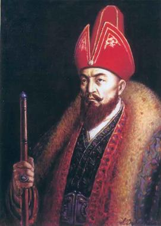

Абылай хан (шын есімі Әбілмансұр) — 1771 – 1781 жылдар аралығында билік құрған Қазақ хандығының 18-ші ханы. Қазақ Ордасының тарихындағы ең ұлы хандардың бірі. Арғы тегі Ақ Орданың негізін қалаған Орда Ежен ханнан бастау алады. Абылай онымен қоса Ұрыс хан, Барақ хан, Әз-Жәнібек хан сияқты билеушілердің тікелей ұрпағы. Абылай хан қазақ тарихындағы бірегей тұлға Кенесары ханның атасы..
Өмірбаяны
Абылай – Жәңгір ханның бесінші ұрпағы. Жәңгір ханның Уәлибақы, Тәуке деген екі ұлы болады. Жәңгір қайтыс болып, таққа Тәуке отырғанда Уәлибақы хандыққа өкпелеп, Үргенішті билеген нағашы атасы Қайып ханның қолына барады. Уәлибақының баласы Абылай жекпе-жекке шыққанда жауы шақ келмейтін батыр болып, қанішер Абылай атаныпты. Осы Абылайдан Көркем Уәли туады. Оның баласы Әбілмансұр (кейін қазаққа хан болып Абылай атанған) «ақтабан шұбырынды» жылдарында жетім қалып, үйсін Төле бидің қолына келеді. Аш-жалаңаштықтан жүдеген өңіне, өсіп кеткен шашына қарап, Төле би оған «Сабалақ» деп ат қойып, түйесін бақтырады. Әбілмәмбет төренің жылқысын да бағады. Бұл, Ш.Уәлихановтың айтуына сүйенсек, Абылайдың 13 жасар кезі болса керек. Төле бидің тәлім-тәрбиесінде болуы Абылайға зор ықпал жасады. Қазақ даласының даналығын бойына жинаған баба ақылы мен парасатын, ел билеу қабілетін, анталаған жауға қарсы қазақ халқы басы біріксе ғана тойтарыс бере алатынын жас баланың санасына ұялата білген. Оған қоса бала кезінен көрген жұпыны тіршілік, өмірлік тәжірибе Абылайдың ел өміріне ерте араласуына себепші болды. Бұқар, Үмбетей жыраулардың, т.б. ауыз әдебиетінің ірі өкілдерінің мәліметтеріне қарағанда, Абылай жиырма жасында қан майданда ерлігімен танылған. Бұқардың Абылайға «Сен жиырма жасқа жеткен соң, Алтын тұғыр үстінде Ақ сұңқар құстай түледің» деуі осының дәлелі.
Әбілмансұрдың Абылай атануы 1723 жылы жоңғар билеушілері қазақ жеріне сансыз әскермен басып кіріп, ойран салды. Қалың ел «Ақтабан шұбырынды, Алқа көл сұлама» аталған зұламатқа ұшыраған кезде Әбілмансұр он екі жаста еді. Ол аш – жалаңаш жүріп, зар жылаған халықты көзімен көрігені былай тұрсын, азап – бейнетін, кек пен ызасын, арман мен тілегін жамиғатпен бірге арқалаған ұлдардың бірі болды. Әбілқайыр Ресей империясының қолдауы арқылы хандық билікке қол жеткізуді көздеп, орыстармен байланысқа шыққан кезде, қазақ жасақтарының жауынгерлік қуатына үлкен нұсқан келеді. Ел ішінде үлкен алауыздық асқынады, берекесіздік етек алады. Бұны білген жоңғарлар қазақтарды келемеждеп, намысын таптап, жігерін құм қылу үшін дүбірлі жекпе – жектерге қазақ батырларын шақырады. Сондай жекпе – жектердің бірі де бірегейі 1731 жылы болады. Оған жауласқан екі жақтың хандары да қатысады. Осы жекпе – жекке жоңғарлар Қалден Серен ханының жақыны, атақты батыр Шарышты шығарады. Қазақ жасақтарынан оған қарсы шығуға ешкімнің жүрегі дауаламайды біраз тыныш тұрып қалса керек. Сонда Шарыш: «Ең мықты батырыңды шығар, болмаса туыңды жығып жеңілді де! – деп айбар шегеді. Осы кезде Сабалақ намысқа шыдамай, Әбілмәмбет ханнан сұранып сайысқа шығады. Ол майданға шыға сала «Абылай-лап, шауып барып, Шарыштың басын шауып түсіріп: «Жау қашты, жау қашты!» деп, жоңғар тобына тұра ұмтылады, жиылған жұрт оның артынан лап қояды. Есі шыққан жоңғарлар алды – артына қарамай тым – тырақай қаша жөнеледі. Абыр – сабыр басылып, ел қайта жиналғанда Әбілмәмбет хан Сабалақтан: «неге Абылайлап ұран салдың?» деп сұрайды. Сонда ол «өз атым Әбілмансұр, мен қанышер атанып кеткен Абылайдың немересі едім, соғыста жолы болатын атамның атын шақырғаным – жолым болар ма дегенім ғой» - дейді. Сол орында – ақ Әбілмәмбет оған атың «Абылай» болсын деп, үш жүзден тоқсан жақсыны ертіп барып, Жәнібек деген кісіден бата алыпты.